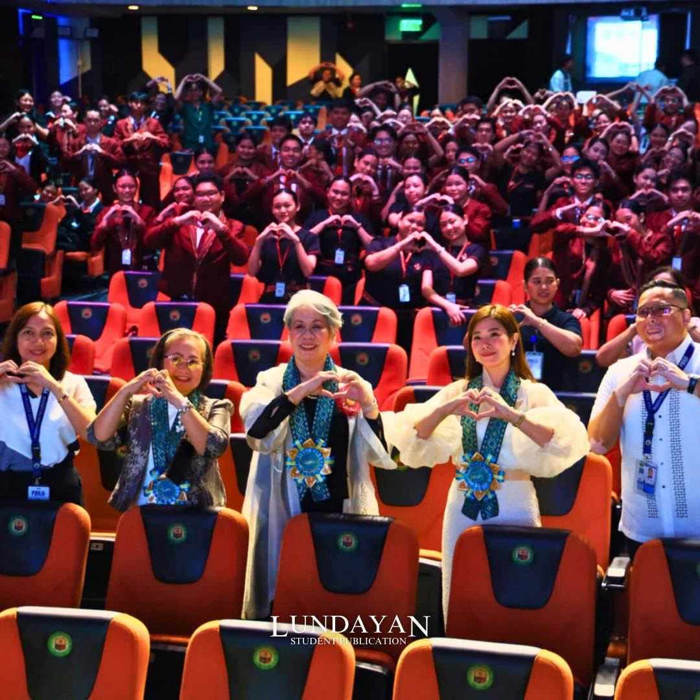

We report on campus
News from every college, written by student reporters and checked by editors before it goes up. Sports, academics, student government and the people behind them.
Read the latest newsThe Integrated Communications Group reports on Pamantasan ng Lungsod ng Pasig and keeps its record: every story, event and announcement, kept by date so anyone can find it later.

News from every college, written by student reporters and checked by editors before it goes up. Sports, academics, student government and the people behind them.
Read the latest newsEvery confirmed event goes on one public calendar with its time and place, so students can plan their week and add events to their phones.
Open the calendarNothing is lost when the semester ends. Stories and events stay in the archive, searchable by day, month and year, back to 2019.
Browse the archiveUsually two to three school days from submission to publication.
The date, time, place, a short description and photos, through the submission form.
They confirm the facts with the organizers and write it up in plain language.
At least one reviewer checks accuracy, photo consent and tone before anything goes live.
It appears on the front page and the calendar, then stays in the archive for good.
ICG is run by students with faculty advisers, and built with students of BSIT-3C and the university's MIS office.
Stories show when they were published and events show when they happen.
Photos of students need their consent. Ask us and we will take a photo down.
Corrections are added to the story with the date they were made. Report a correction
Anyone can read and search the archive. No account needed.
Send it at least three school days ahead and we will put it on the calendar.